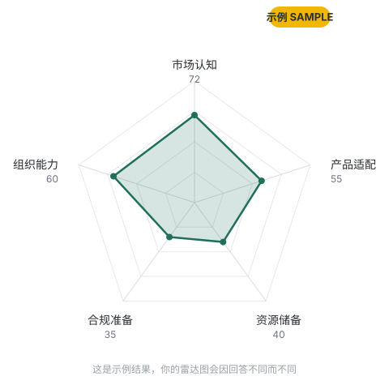

Five dimensions · 15 questions · where you stand.
五个核心维度、15 道题目，快速判断企业当前的全球化准备度。完成后生成五维雷达图与优先行动建议——这只是通用自测，不能替代针对你具体情形的深度诊断。3分钟自测，1元获得你的出海准备度评分 + 关键短板 + 优先级建议。
本测评从以下五个维度评估企业当前的全球化准备度：
市场认知 对目标市场的需求、竞争格局、进入壁垒是否有基本判断
产品适配 产品/服务是否需要本地化调整，调整成本是否可控
资源储备 资金、人才、供应链是否具备支撑海外布局的基础条件
合规准备 对目标市场的法规、税务、劳工等合规要求是否有认知
组织能力 团队是否具备跨文化协作与远程管理海外业务的能力
完成15道题目后，系统会生成五维雷达图和针对性的优先行动建议。

Outbound readiness snapshot.

支付 1 元，解锁完整解读
扫码添加董立鑫微信，支付 1 元后发送你的自测得分截图，即可获取完整五维解读与优先行动建议。